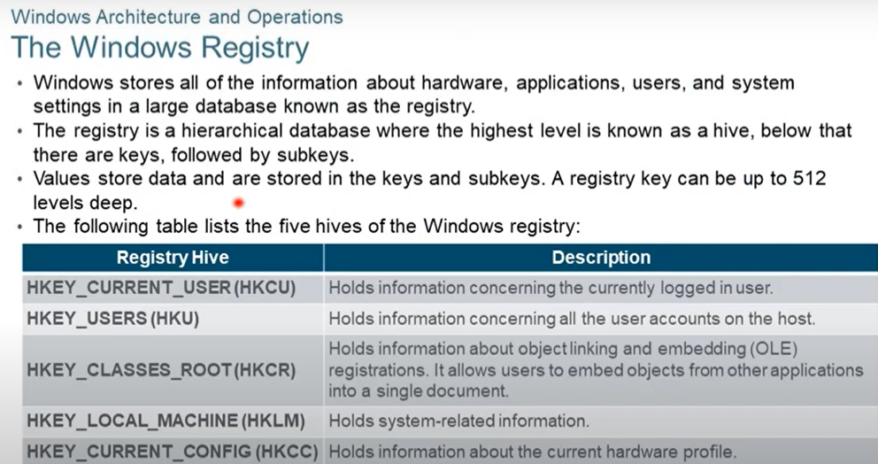
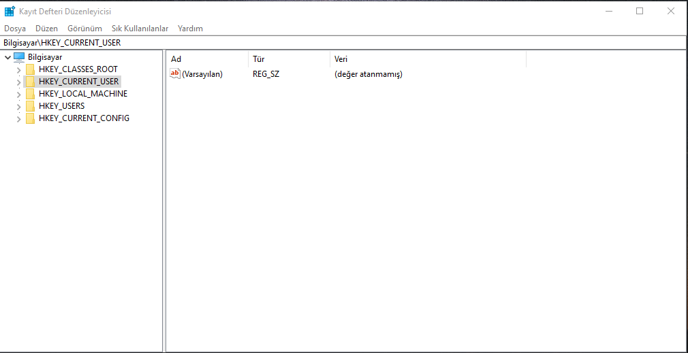

The Windows Registry

Kayıt derfteri ya da kayıt kovanı gibi Türkçeye çevirebiliriz; aslında Windows'un kendi local veritabanıdır.Windows'un çekirdek isşetim sistemi databaseidir.
5 Tane ana alan var ve siz 6. ana alanı yaratamazsınız Windows buna izin vermiyor.
- HKEY_CURENT_USER(HKCU) : Bilgisayara oturum açmış kullanıcıların bilgisini tutuyor.
- HKEY_USERS(HKU) : Sizin bilgisayarınza varolan kullanıcılan özelliklerini tutar.
- HKEY_CLASSES_ROOT(HKCR): OLE bilgilerını tutar OLE ise:--> Bir programda herhangi bir biligiyi alıp diğer programınızın içerisine atmanızı sağlar. Örnek verecek olursak eğer bir jpeg dosyasını alıp bir web belgesinin veya excel dosyasının içersine yapıştırmak.
- HKEY_LOCAL_MACHıNE(HKLM):Windows sistem bilginizi tutar.
- HKEY_CURRENT_CONFıG(HKCC) : Donanım bilgilerinizini tutar.
Başlat->Arama->Kayır defteri yöneticisi veyaregister
